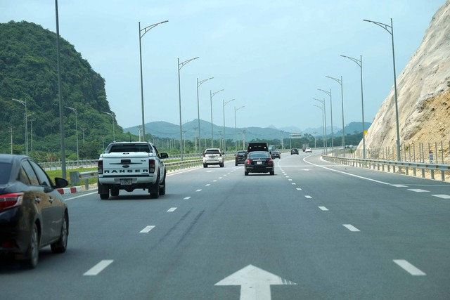

Doanh nghiệp tại TP.HCM nợ thuế tăng mạnh
Thứ năm, 10/08/2023, 05:48 (GMT+7)
Lý giải cho việc cần thiết thu phí các dự án cao tốc do ngân sách nhà nước đầu tư, Bộ GTVT cho rằng với các dự án này, người dân tiết kiệm được thời gian và chi phí vận hành phương tiện. Theo tính toán trên 3 tuyến cao tốc đang vận hành là Cầu Giẽ - Ninh Bình, TP.HCM - Trung Lương và TP.HCM - Long Thành - Dầu Giây, so với lưu thông tuyến trên quốc lộ song hành, phương tiện sẽ được lợi khoảng 5.265 đồng/km, trong đó 25% từ tiết kiệm chi phí vận hành phương tiện và 75% từ tiết kiệm thời gian hàng hóa và hành khách trên đường.
Cũng theo Bộ GTVT, yêu cầu ngân sách nhà nước cho đầu tư xây dựng mới đường cao tốc là rất lớn, do đó xây dựng chính sách để có nguồn dành cho đầu tư phát triển cao tốc là cần thiết. Ngoài ra, dự kiến đến năm 2025, khi 1.624 km đường cao tốc đầu tư từ nguồn ngân sách nhà nước hoàn thành và đi vào hoạt động, ước tính tổng nhu cầu kinh phí quản lý, bảo trì giai đoạn 2021 - 2025 khoảng 9.067 tỉ đồng (bình quân 1.813 tỉ đồng/năm). Các phương tiện giao thông chuyển sang di chuyển trên đường cao tốc sẽ dẫn đến phân lưu làm ảnh hưởng đến phương án tài chính của một số dự án BOT hiện có (có thể làm giảm doanh thu của dự án). Việc thu phí sẽ tạo ra nguồn lực để thực hiện các giải pháp chia sẻ rủi ro giữa nhà nước và nhà đầu tư.
Giới thiệu
Tell Ur Mom II - Winno ft. Heily「Cukak Remix」/ Audio Lyrics Video
Follow Me

Liên hệ
Điện thoại: 0987654321
Email: web1013@dinhnt.com